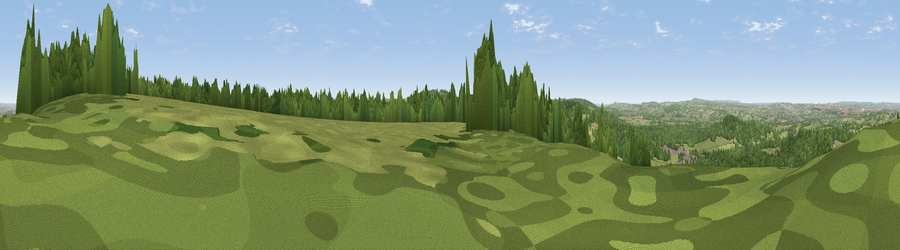

Viewpoint near Horningsham
#13538 in England · top 20% of its area beats it · near HorningshamThe view, rendered

A 360° render of this exact spot computed from the terrain model, tree cover and land cover — summer colours, afternoon light, calibrated against photographs of famous viewpoints. Real trees, hedges and buildings will differ in detail.
The panorama
Grey silhouette: terrain skyline in each direction (720 bearings, Earth curvature and refraction included). Dashed green: skyline with trees (+15 m) and buildings (+8 m) as obstacles. Blue strip: how far the ground is visible on each bearing.
Where the view opens
Wedge length = distance to the farthest visible ground on that bearing (vegetation-aware). Rings at 10, 25 and 50 km.
What fills the view
52% grassland · 37% woodland · 8% cropland · 2% built-up ·
Angular shares of the visible panorama (visual magnitude), not map area. Landscape diversity 0.44 (0–1 Shannon).
Key numbers
More beautiful places nearby
The staircase of upgrades: each row has a higher view potential than everything closer. Driving times are estimates from straight-line distance, calibrated against real road routing — check an actual route before setting out.
| Place | Direction | Drive | Score |
|---|---|---|---|
| Viewpoint near Horningsham | NNE · 0 km | ~1 min | 61.2 |
| Cley Hill | NE · 2 km | ~6 min | 76.8 |
| Viewpoint near Lamyatt | WSW · 17 km | ~30 min | 77.8 |
| Viewpoint near Berwick St John | SSE · 24 km | ~40 min | 78.2 |
| Beacon Batch | WNW · 37 km | ~55 min | 79.4 |
| Bleadon Hill [Loxton Hill] | WNW · 48 km | ~69 min | 79.6 |
| Viewpoint near Stinchcombe | N · 56 km | ~78 min | 80.5 |
| Viewpoint near Askerswell | SSW · 56 km | ~78 min | 81.7 |
51.18528, -2.25427 · source: screening · position refined by local search. Computed location — check access rights before visiting.